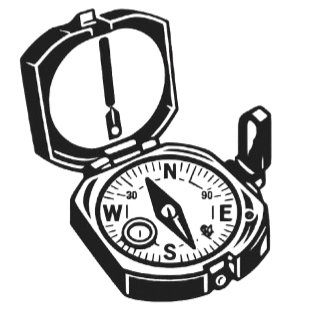
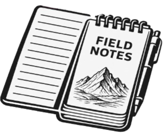
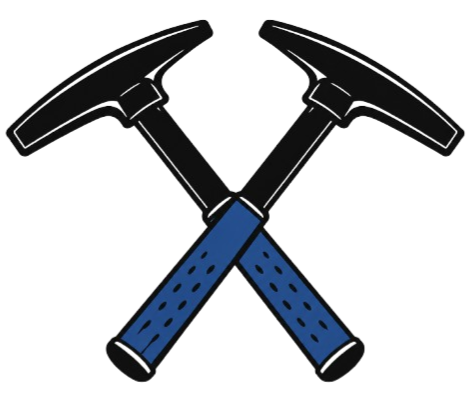
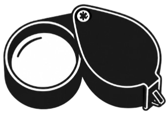
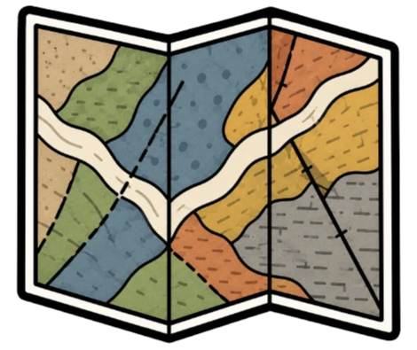
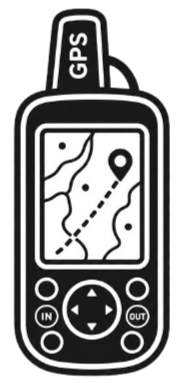
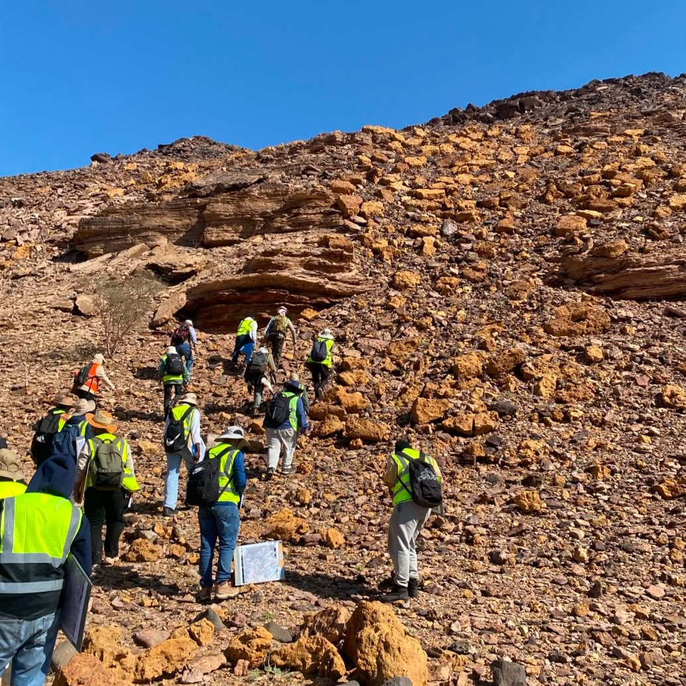
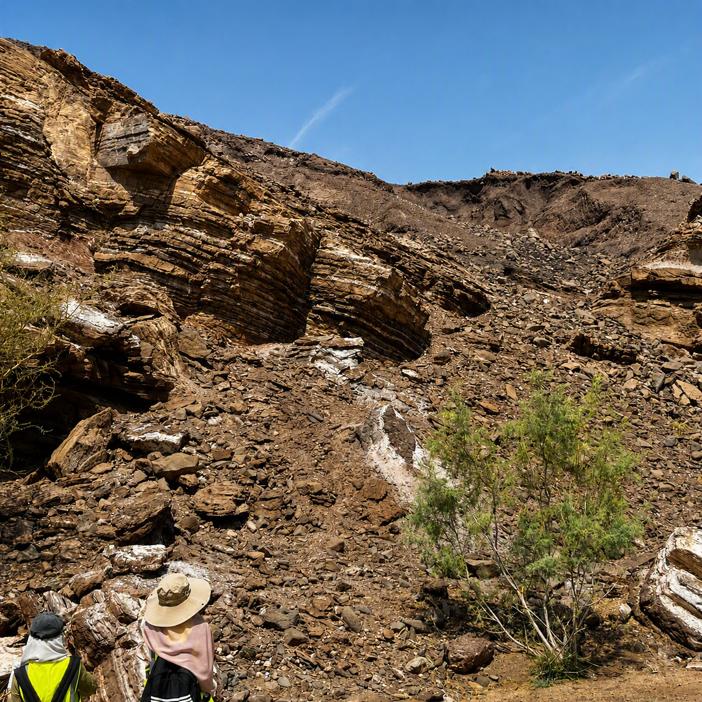
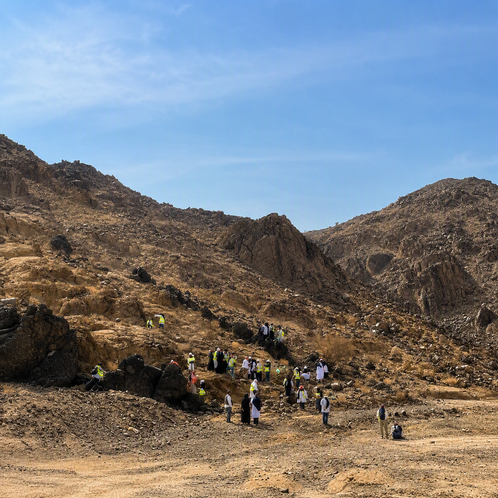

نبذة عن الرحلات الحقلية
تعد الرحلات الحقلية من أهم مميزات الدراسة في كلية علوم الأرض، حيث ينتقل الطالب من دراسة المفاهيم داخل القاعات الدراسية إلى تطبيقها عمليًا في المواقع الجيولوجية الحقيقية. كما تسهم هذه الرحلات في تنمية مهارات الملاحظة والتحليل والعمل الميداني التي يحتاجها الجيولوجي في حياته المهنية.
أهمية الرحلات الحقلية
يلاربط الجانب النظري بالتطبيق العملي
التعرف على الصخور والمعادن
دراسة الطبقات والتراكيب الجيولوجية
تعلم استخدام الخرائط والأدوات
جمع العينات وتحليلها
تنمية مهارات العمل الميداني
الرحلات الرئيسية
رحلة الجيولوجيا الحقلية
رحلة الخرائط الجيولوجية
الزيارات الميدانية الأخرى
الأدوات الحقلية

البوصلة الجيولوجية

النوتة الحقلية

المطرقة الجيولوجية

العدسة الجيولوجية

الخرائط الجيولوجية

جهاز تحديد المواقع (GPS)
متطلبات الرحلات الحقلية
- الالتزام بتعليمات السلامة.
- ارتداء الملابس والأحذية المناسبة.
- الالتزام بالحضور والمشاركة الفعالة.
- المحافظة على المواقع الجيولوجية والبيئة.
- إحضار الأدوات المطلوبة حسب طبيعة الرحلة.
مقتطفات من الحقل






تمنح الرحلات الحقلية الطالب فرصة التعلم من الطبيعة مباشرة، واكتساب خبرة عملية في التعرف على الصخور والمعادن ورسم الخرائط الجيولوجية وتحليل البيانات الميدانية، مما يجعلها من أكثر التجارب التعليمية تميزًا في كلية علوم الأرض.